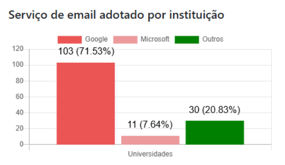

FIOCRUZ perde 98% do espaço que tinha em nuvem da Microsoft
Uma mudança de contrato da nuvem da Microsoft é responsável pela FIOCRUZ perder 98% do espaço que tinha contratado. Soberania digital?
Veja no canal:
- Vocês devem lembrar da Fiocruz, a Fundação Oswaldo Cruz. Especialmente da época da pandemia. É uma instituição brasileira da área da saúde.
-
Eles têm editora própria, instituição de ensino, pesquisa, laboratórios, estatísticas de saúde, combatem agrotóxicos e batem no agro com muita frequência e com muita pesquisa.
-
É muito importante na história do Brasil, e é um dos dois únicos laboratórios de vacinas pra humanos do país (vacina pra bois tem mais de 30 fábricas).
-
O volume de material digital que eles precisavam dependia de um contrato de 30 petabytes.
-
Eles tinham um contrato com a Microsoft pra acessar esse tanto de armazenamento pro sharepoint, one drive, e-mails e tudo deles.
-
O contrato da Fiocruz assinado em 2024 era com a Brasoftware no valor de 8,6 milhões ao ano. Desses milhões, 4,7 eram de licenças de serviços de educação da Microsoft.
-
No próprio ano de 2024 a Microsoft mudou a política da empresa, provavelmente naquela leva quando o governo Trump foi eleito, e decidiram mudar esses contratos da educação
-
Aí, no ano passado, esse valor do contrato pulou de R$ 8,6 milhões para R$ 11,6 milhões.
-
Essa reportagem do Núcleo Jornalismo levantou que em 2024 o núcleo de TI da Fiocruz já tava preocupado com a dependência desses softwares e a urgência de fazer essas renovações contratuais
-
Resumo da ópera: com essas mudanças e os preços caríssimos, o armazenamento deles foi de 30 petabytes pra 730 terabytes (redução de 98%)
-
A Fiocruz não é a única afetada por essas políticas
-
As universidades federais do Ceará, a rural de Pernambuco, a do Paraná, todas tiveram problemas com esses contratos com Microsoft e Google também
https://www.digital.ufrpe.br/noticias/reducao-limite-ondrive
-
Além das SEDUCs (secretarias de educação) de SP e GO
-
Tem um site que chama Observatório da Educação Vigiada
-
Que mapeia a dependência dessas bigtechs no setor da educação universitária (e da pesquisa) na América Latina e África
-
E nesse levantamento, 80% das universidades brasileiras dependem de armazenamento da Google ou Microsoft
-
Só o google tá em 71% dos serviços de e-mail delas

- No ensino básico esse número cai pra 50% de dependência das GAFAM
- Mas tudo isso é reflexo de uma falta de estratégia de soberania nacional
- No ano passado o OP publicou um texto sobre como a Serpro tá dependendo de parceria com essas big techs estrangeiras pra construir a tal “nuvem soberana”
https://outraspalavras.net/tecnologiaemdisputa/serpro-brasil-esta-vendendo-sua-soberania-digital/
- E temos vídeo no canal também:
- O que só contribui pra situações semelhantes a essa da Fiocruz
- Todos os dados e as pesquisas da Fiocruz, sobre agro inclusive, sobre incidência de doenças, tudo já tava nas mãos das empresas estadunidenses
- E agora as próprias bases nacionais, supostamente soberanas, vão por esse caminho
- O que aconteceu foi também um processo de cercamento do capital monopolista
- Google e Microsoft ofereceram as ferramentas a um custo mais baixo de início, e uma vez que todos estão dependentes, eles controlam o fluxo de dados mas também os preços
- Aí caberia à estratégia do governo fazer com que houvesse disseminação de uma boa alternativa nacional
- E essa história toda também aponta pra crises e escassez de armazenamento que a gente já tem visto há um tempo
- E como uma parte tão grande dos servidores é controlada por um país em guerras eternas, cabe a eles escolher o que vai ou não vai caber na internet do futuro de acordo com os interesses deles mesmos
- E tudo tem apontado pra priorizar tecnologias e dados de guerra mesmo e, obviamente, colocar educação de país subalterno em segundo plano
- Ainda mais se essa educação for minimamente subversiva ao capital
- Então eu pergunto pra vocês: pra quem vai ser restrita a internet no futuro próximo?